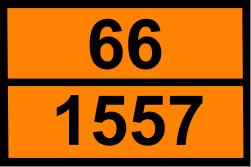
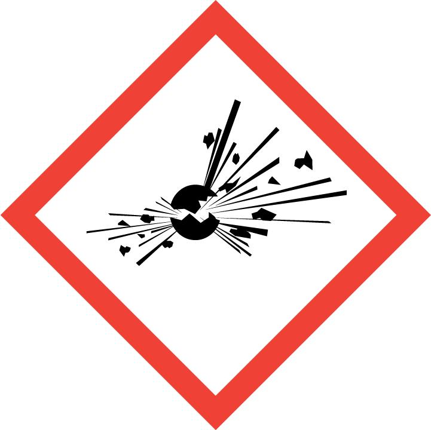
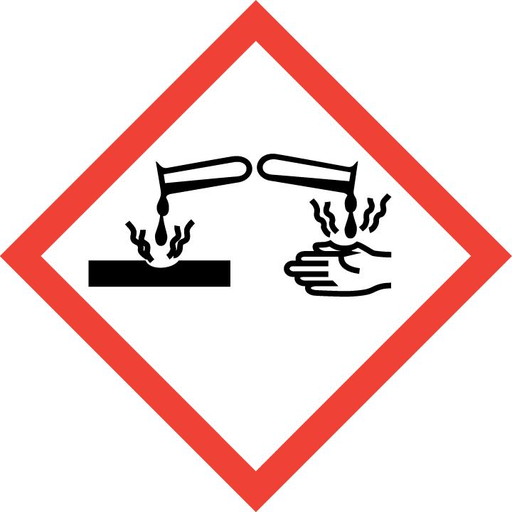
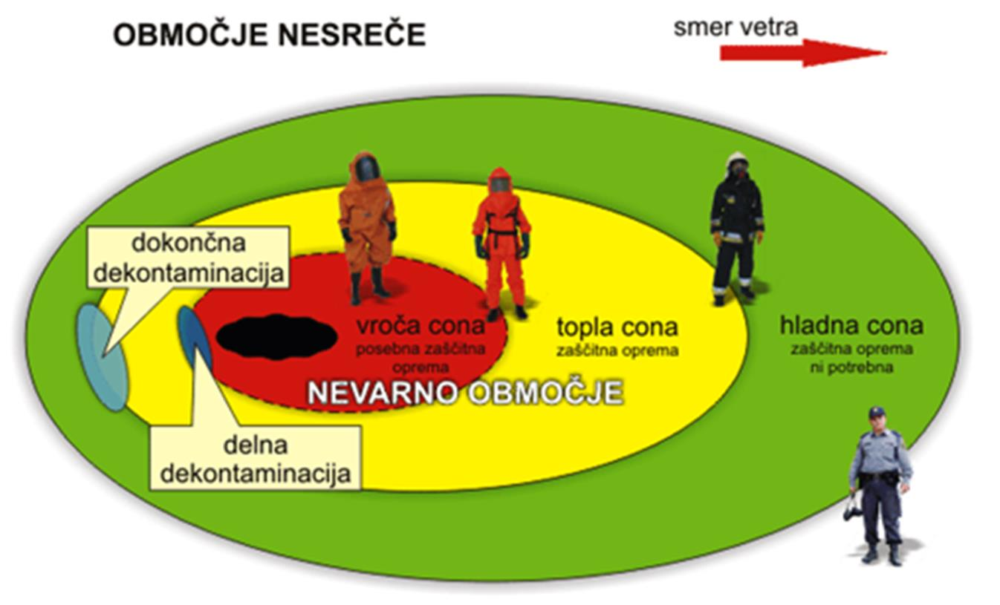
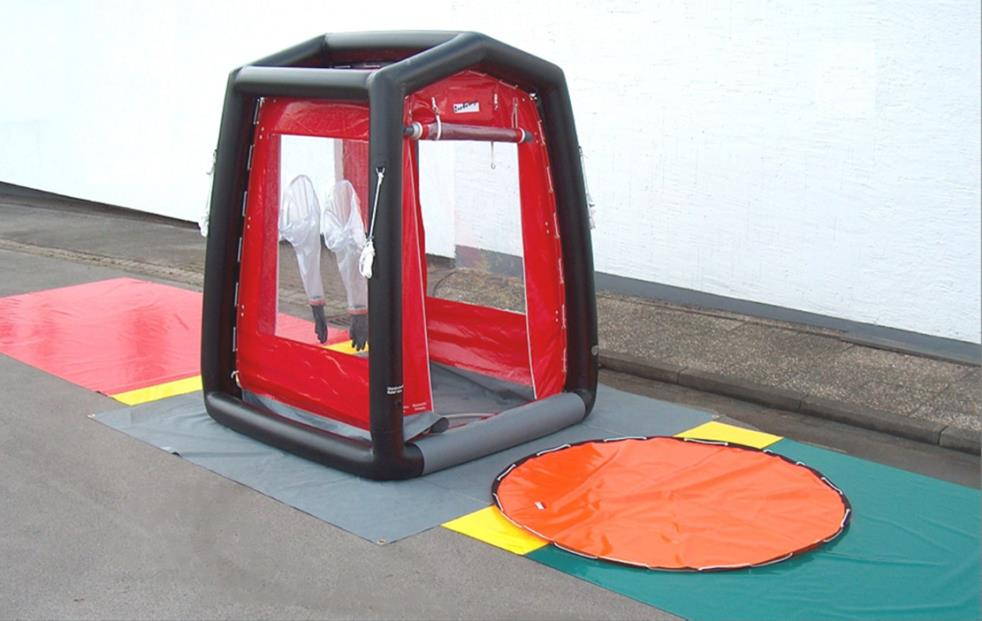

V Sloveniji je približno 325.000 ton različnih nevarnih snovi. Od tega je kar 95 odstotkov tekočih, štirje odstotki trdnih in le en odstotek plinastih nevarnih snovi. Vnetljivih snovi je 83 odstotkov, prevladujejo pa tekoče vnetljive snovi (nafta in naftni derivati). Nevarne snovi so razvrščene v devet razredov. K njim prištevamo vse izhodne snovi, polizdelke, odpadne snovi in pripravke. Nevarne snovi so plini, vnetljive tekočine, snovi, ki pospešujejo gorenje, jedke snovi, strupi, radioaktivne snovi, kužne in gabljive snovi, snovi s posebnimi nevarnostmi, eksplozivi, snovi, ki v dotiku z vodo razvijajo vnetljive pline, organski peroksidi...
Razvrstimo jih v naslednje razrede, ki so označeni z mednarodnimi oznakami:
1. eksplozivi
2. plini (pod tlakom ali utekočinjeni)
3. vnetljive tekočine
4. vnetljive trdne snovi
5. oksidirajoče snovi
6. strupene snovi ali strupi
7. radioaktivne snovi
8. jedke snovi
9. druge nevarne snovi
Kadar je osnovni razred (primarna številka) dopolnjen z drugo številko, to pomeni dodatno nevarnost oziroma lastnost. Kadar število sestavljajo trije znaki, pomeni, da obstaja možnost verižne reakcije. Kadar je številkama dodan X, pomeni, da bo snov burno reagirala z vodo (Kemlerjeva kombinacija).

Slika 1: Primer table: število 66 predstavlja zelo trupeno snov; 1557 je oznaka snovi – arzenove spojine (trdna)
Poleg oranžne table, ki jo sestavlja kombinacija oznake nevarnosti snovi (zgoraj) in številčne oznake s točno snovjo (spodaj), se označevanje dopolnjuje z opozorilnimi tablami (piktogrami), ki slikovno ponazarjajo razrede snovi.
 
Slika 1b: Piktograma GHS – levo eksplozivne snovi, desno jedke snovi
TAKTIKA POSREDOVANJA
Kot vse razvite države ima tudi Slovenija razvit sistem posredovanja ob nevarnih snoveh, združen v kratico PIRS. Kratica je sestavljena iz posameznih črk, vsaka od njih predstavlja posamezno nalogo. P – prepoznavanje, I – izolacija, R – reševaje, S – sanacija. Ker se sanacija v Sloveniji opravlja večinoma s pooblaščenimi podjetji, se gasilci soočajo predvsem s prepoznavanjem, z izolacijo in reševanjem.
Prepoznavanje snovi je ključno, saj je od lastnosti snovi odvisen ves nadaljnji postopek. Pravilna izbira zaščitnih oblek, določevanje obsega nevarnosti, postavitve con, primerna dekontaminacija … V namen prepoznavanja snovi se v prvi fazi poslužujemo znakov nevarnosti, ki so del transporta in skladiščenja, sledijo dokumenti in listine, ki jih morajo posedovati lastniki oziroma prevozniki nevarnih snovi, in kot zadnja stopnja so uporabljene tehnika in metode analize, s čimer se dejansko prepoznava in odkriva nevarno snov.
Izolacija (omejevanje dostopa) je nujna zaradi zagotavljanja varnosti vseh reševalcev in prebivalcev. Z jasnim označevanjem se določi območje, na katerem je treba uporabljati primerno zaščitno opremo glede na snov, in območje, kjer se lahko posredovalci gibljejo varno brez primerne zaščite. Območja so razvrščena v tri cone, rdečo rumeno in zeleno.
Rdeča cona pomeni neposredno nevarnost in zajema območje nevarne snovi in njenih vplivov (hlapov...) v tolikšnem obsegu, kjer je še možnost, da nastanejo poškodbe.
Rumena cona je območje, kjer so lahko še lokalno prisotni nevarna snov in njeni vplivi, praviloma pa ne več. To območje imenujemo tudi topla cona ali območje varnostnega pasu.
Zelena cona je območje, kjer ni nikakršne nevarnosti za zdravje, je pa še vedno omejeno gibanje, kjer delujejo gasilci, reševalci in druge službe, ki usmerjajo intervencijo.

Slika 2: Oznaka con in stopnje zaščite
REŠEVANJE
Naloga reševanja je lahko izredno obsežna, saj se v prvi fazi začne reševanje ljudi, ki so bili udeleženi v nesreči (v stiku z nevarno snovjo). Poškodovance je treba premestiti z nevarnega območja, jih primerno dekontaminirati in jih zdravstveno oskrbeti.
Sledi – lahko že hkrati, odvisno od številnosti moštva posredovalcev – reševanje mesta nesreče. Večinoma je treba iztekanje ali uhajanje zaustaviti oziroma zatesniti in nato snov prečrpati v nadomestno cisterno, posodo...
ZAŠČITNA OPREMA
Za učinkovito posredovanje je treba primerno opremiti posredovalce. V ta namen se v Sloveniji uporabljajo štiri stopnje zaščite.
Prva stopnja je zaščita z osnovno gasilsko opremo in IDA.
Druga stopnja je kapljevinska zaščita oziroma obleka proti obrizgu, ki je razdeljena v podskupini 2A in 2B.
Tretja stopnja je plinsko tesna zaščita.
Četrta stopnja je zaščitna obleka za izredno hladne oziroma podhlajene snovi.
Glede na tip snovi in predvsem njene lastnosti je treba za ukrepanje izbrati najprimernejšo opremo, za manj zahtevna dela in dela, ki so odmaknjena od neposrednega stika, pa se lahko uporabi tudi lažja zaščitna obleka. Pri ravnanju s kislino (prečrpavanje, tesnjenje...) je treba uporabljati tretjo stopnjo zaščite, medtem ko pri preventivnem tesnjenju jaškov in dekontaminaciji lahko uporabljamo zgolj drugo stopnjo začite. Primer uporabe primerne zaščitne opreme je viden na sliki 2.
DEKONTAMINACIJA
Med rumeno in zeleno cono se določi vstopno in izstopno točko. V prvi fazi sta točki namenjeni nadzoru nad dogajanjem v nevarnem območju, zapisovanju in predvsem organizaciji delovišča. Nevarne snovi lahko namreč zgolj s prenosom opreme povzročijo hujše poškodbe pri ljudeh.
Izhodna točka ima poleg primerne naloge dodatno vlogo, to je dekontaminacija posredovalcev in ponesrečencev. Za dekontaminacijo je vsekakor najpomembnejša hitra postavitev delovišča, ki je prilagodljiva gasilcem kot tudi ljudem, ki pomoč potrebujejo. V veliki meri je vsaj v prvi fazi nemogoče izpeljati popolno dekontaminacijsko območje, zato se primarno postavi hitra dekontaminacijska površina za najnujnejše čiščenje in izpiranje. V nadaljevanju je ta del hitra ali delna dekontaminacija gasilcev, ki se vračajo po dodatno opremo. Postavi se neposredno po izstopu iz rdeče cone na meji z rumeno.
Glavna ali dokončna dekontaminacija se med tem ustrezno dopolni in pripravi, kar omogoča kakovostno delo. Glavno dokončno dekontaminacijo se postavi na območje med rumeno in zeleno cono. Sestavljena je iz vstopnega dela, ki je namenjen hitremu izplakovanju oziroma slačenju (odvisno od tipa poškodbe oziroma udeleženca, gasilec ali občan), glavnega dela za izpiranje in umivanje ter izhodnega dela, kjer se poškodovanca pregleda in obleče v nadomestna oblačila ali vsaj primerno zavaruje.

Slika 3: Primer postavitve dekontaminacijske točke, zelena površina je mesto vstopa
POTEK DOGAJANJA
Celotno posredovanje pri nevarnih snoveh je splet različnih vplivov snovi glede na okolico, prebivalstvo, vremenske razmere … Vodja intervencije (gasilec, odgovoren za vse dogajanje, in sodelujoče službe) v tem primeru koordinira glavnino intervencije, medtem ko posamezne segmente prepusti sektorskim vodjem ali vodjem delovišč (dekontaminacija, delo v coni, logistika). Končni cilj, ki ga vodja želi doseči, je rešiti človeška življenja, ob zmožnosti enote vzporedno omejiti nevarnost (iztekanje …) in nevarnost postaviti v obliko, s katero ne ogroža ljudi, živali in premoženja. Pri vsem mora upoštevati vse sodelujoče, kot so policija reševalci, inšpektorji za okolje in prostor, lastniki snovi, prevozniki … Praviloma so intervencije z nevarno snovjo zelo hitre, saj s tem zmanjšujemo vpliv na celotno dogajanje. Sledi druga faza, ki v večini primerov traja več ur. V izognitev nepotrebnim čakanjem, dovoljenjem ipd. je treba pri takšnih intervencijah razmišljati hitreje. Intervencija je za gasilce zaključena, ko stanje prevzame služba za sanacijo in dogodek ne predstavlja nobene nevarnosti, ali pa v trenutku, ko je sanacija opravljena sočasno z reševanjem. Sanacija namreč ni naloga gasilstva.